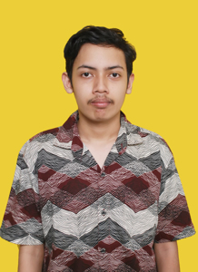
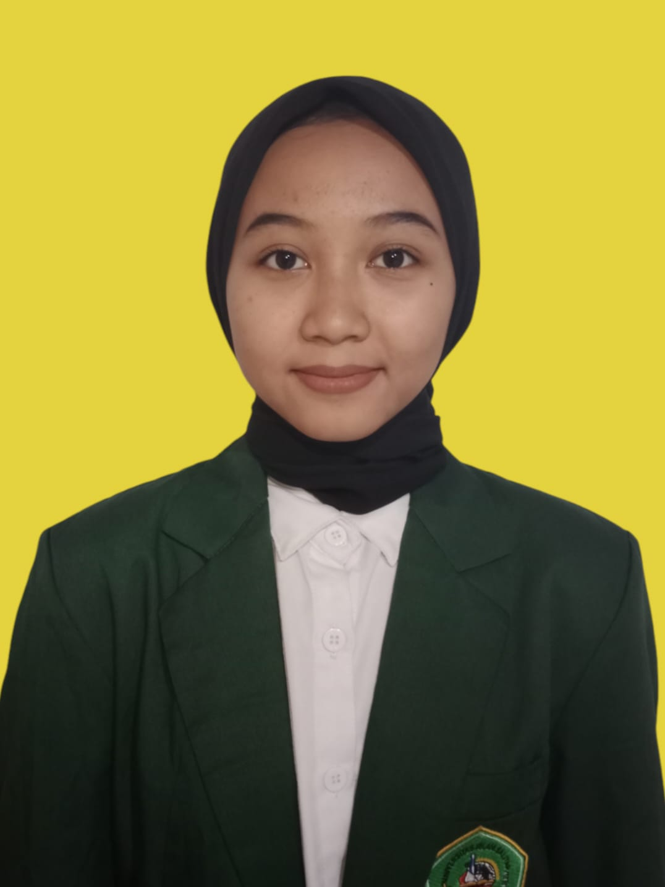

| Foto | Biodata |
|---|---|
|  |
NAMA: Rafii Rahmadiansyah NIM: 23104410052 TTL: Blitar, 22 Desember 2004 ALAMAT: Kota Blitar, Sananwetan, Jl. Madura MOTTO: Joining together at last |
 |
NAMA: Desi Widyawati NIM: 23104410090 TTL: Blitar, 30 Agustus 2005 ALAMAT: Ds. Slumbung, Kec. Gandusari, Kab. Blitar MOTTO: Jangan pernah menyerah pada mimpimu |
|
NAMA: Muhamad Aditya Rizqi Fauzi NIM: 23104410079 TTL: Blitar, 5 September 2004 ALAMAT: Dsn Pundensari, Kec. Talun, Blitar MOTTO: Jadilah dirimu sendiri |
|
|  |
NAMA: Heni Zulia Cahyani NIM: 23104410092 TTL: Kediri, 9 April 2005 ALAMAT: Desa Manggis, Dsn Sumber Urip, Kec. Ngancar, Kab Kediri MOTTO: Hiduplah dengan tujuan bukan dengan keinginan |
|
NAMA: Abdul Aziz Habibulloh NIM: 23104410051 TTL: Blitar, 22 Mei 2004 ALAMAT: Dsn. Tritihrejo, Ds. Tumpang, Kec. Talun, Kab. Blitar MOTTO: Kalau orang lain bisa kenapa harus saya |
|
|
NAMA: Rahmadian Pinasti NIM: 23104410060 TTL: Blitar, 16 Oktober 2004 ALAMAT: Centong Sawentar, Kanigoro, Blitar MOTTO: Kegagalan terjadi karena terlalu banyak berencana tapi sedikit berpikir |